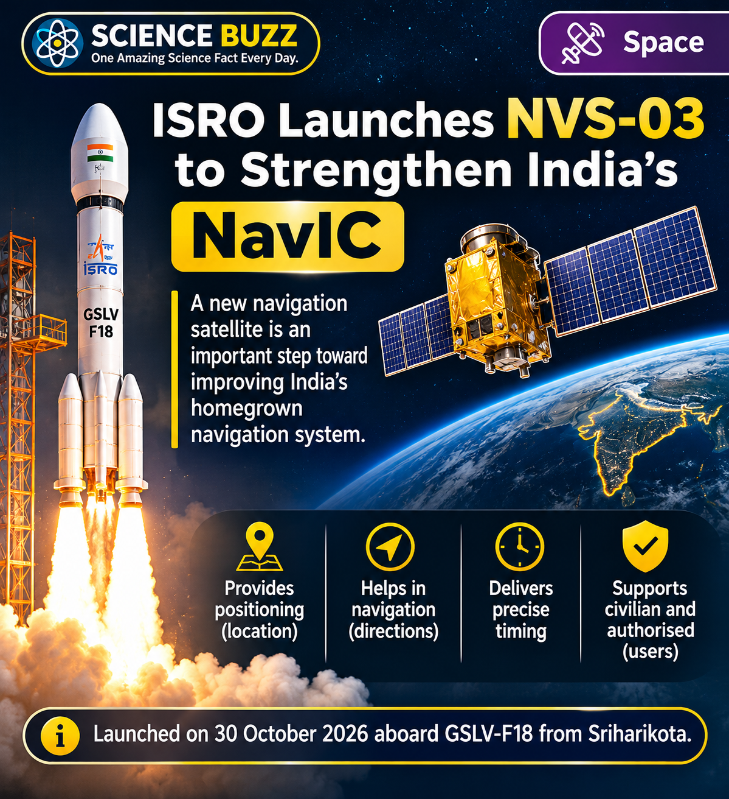

ISRO successfully launched the NVS-03 navigation satellite aboard the GSLV-F18 rocket from Sriharikota on 30 October 2026. NVS-03 is part of India’s NavIC system, which provides positioning, navigation, and timing services across India and nearby regions. The satellite is designed to help improve the availability and continuity of NavIC. However, one successful launch does not by itself guarantee that the entire constellation is fully operational: the satellite must complete post-launch operations and be validated for service, and further satellites are needed to strengthen the system
ISRO Launches NVS-03 to Strengthen India’s NavIC
A new navigation satellite is an important step toward improving India’s homegrown navigation system.

Source: ISRO